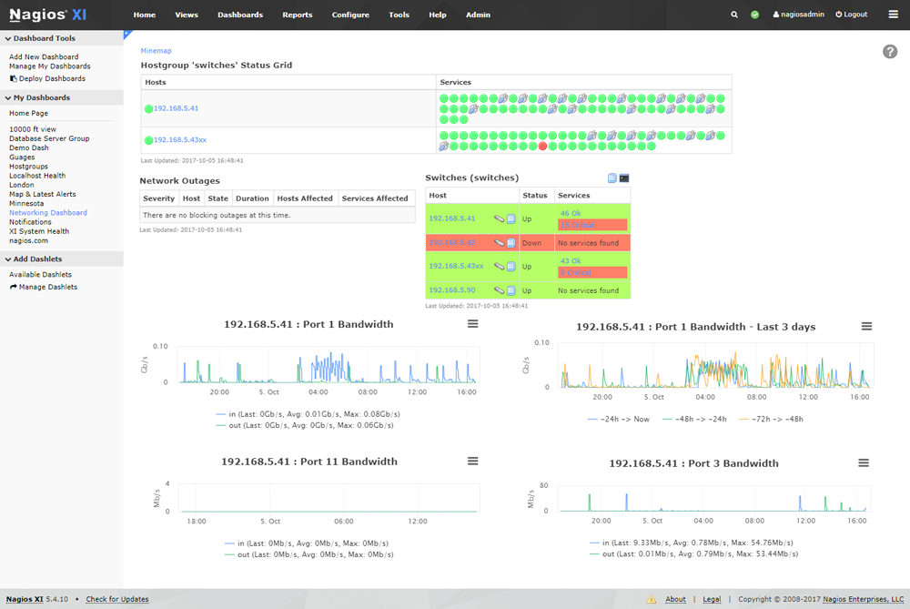

Utiliza una de las instancias de OpenStack y realiza una de las partes que elijas entre las siguientes sobre el servidor de OVH, dulcinea, sancho, quijote y frestón:
-
Métricas: recolección, gestión centralizada, filtrado o selección de los parámetros relevantes y representación gráfica que permita controlar la evolución temporal de parámetros esenciales de todos los servidores.
-
Monitorización: Configuración de un sistema de monitorización que controle servidores y servicios en tiempo real y envíe alertas por uso excesivo de recursos (memoria, disco raíz, etc.) y disponibilidad de los servicios. Alertas por correo, telegram, etc.
-
Gestión de logs: Implementa un sistema que centralice los logs de todos los servidores y que filtre los registros con prioridad error, critical, alert o emergency. Representa gráficamente los datos relevantes extraídos de los logs o configura el envío por correo al administrador de los logs relevantes (una opción o ambas).
Detalla en la documentación claramente las características de la implementación elegida, así como la forma de poder verificarla (envía si es necesario usuario y contraseña por correo a los profesores, para el panel web si lo hubiera, p.ej.).
Nagios es un sistema de monitorización de redes ampliamente utilizado, que vigila los equipos y los servicios que se especifiquen, alertando cuando el comportamiento de los mismos no sea el deseado.
Cuenta con una extensa, sólida y organizada comunidad de soporte que ofrece de modo gratuito addons y plugins para extender sus funcionalidades a través de Nagios Exchange, información de fondo y ayuda a través de Nagios Community e información técnica a través de Nagios Wiki.
Características principales
-
Monitorización de servicios de red como: SMTP, POP3, HTTP, SNMP, ...
-
Monitorización de los recursos del sistema hardware como: carga de CPU, uso de los discos, RAM, estado de los puertos, ...
-
Independencia de sistemas operativos
-
Posibilidad de monitorización remota mediante túneles SSL cifrados o SSH
-
Posibilidad de programar plugins específicos para nuevos sistemas
-
Chequeo de servicios paralizados
-
Notificaciones cuando ocurren problemas en servicios o hosts, así como cuando son resueltos
-
Posibilidad de definir manejadores de eventos que se ejecuten al ocurrir un evento de un servicio o host (acciones pro-activas)
-
Soporte para implementar hosts de monitores redundantes
-
Visualización del estado de la red en tiempo real a través de su interfaz web, con la posibilidad de generar informes y gráficas de comportamiento de los sistemas monitorizados, y visualización del listado de notificaciones enviadas, historial de problemas, archivos de registros, ...
Las alertas que genera pueden ser recibidas por correo electrónico y mensajes SMS, entre otros.
Así luce el panel web de Nagios:

Instalación
En primer lugar, me gustaría aclarar un poco cuál va a ser el entorno de trabajo, y es que el escenario sobre el que vamos a trabajar, ha sido construido en diferentes posts previamente elaborados. Los dejo ordenados a continuación por si te interesa:
- Creación del escenario de trabajo en OpenStack
- Modificación del escenario de trabajo en OpenStack
- Servidores OpenStack: DNS, Web y Base de Datos
He hecho más tareas sobre este escenario, las puedes encontrar todas aquí.
Explicado esto, vamos a proceder con la instalación de nuestro sistema de monitorización.
En mi caso, voy a llevar a cabo la instalación de Nagios en la máquina Quijote, es decir, que ésta será el servidor principal. Hay que recordar que Quijote consta de un sistemas CentOS 8.
He decidido escoger como servidor este equipo principalmente porque Nagios necesita un servidor web para poder acceder a su panel de administración web, y esto es algo que me interesa ya que, es en esta máquina donde se encuentra instalado el servidor web de mi escenario. No queda solo ahí, ya que nuestro servidor web, en mi caso, Apache, tiene que ser capaz de ejecutar código PHP. Si no dispones de estos requisitos, puedes visitar el tercer artículo indexado anteriomente, donde llevo a cabo la instalación de estos requisitos.
Para seguir con la instalación necesitamos tener instalados los siguientes paquetes.
En Debian/Ubuntu:
apt install gcc make unzip wget
En CentOS:
dnf install gcc make unzip wget
Hecha la introducción, es el momento de empezar con la propia instalación en sí.
Para descargar Nagios nos dirigiremos a su sitio web y copiaremos el enlace del archivo .tar.gz, para posteriormente descargarlo en nuestro sistema mediante la herramienta wget. En mi caso, cuando estoy escribiendo este post, la última versión disponible es la 4.4.6. Puedes descargarlo desde aquí
wget https://github.com/NagiosEnterprises/nagioscore/releases/download/nagios-4.4.6/nagios-4.4.6.tar.gz
Una vez descargado, lo descomprimimos:
tar xf nagios-4.4.6.tar.gz
.